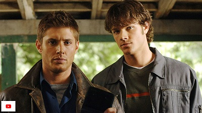

Supernatural

Supernatural este un serial de televiziune american în genurile fantastic, thriller, de acțiune, de groază. Serialul a fost creat de Eric Kripke și îi are ca protagoniști pe Jared Padalecki în rolul lui Sam Winchester și pe Jensen Ackles în rolul lui Dean Winchester, doi frați care vânează demoni, fantome, monștri și alte personaje paranormale.
Serialul este filmat în principal în Vancouver, Columbia Britanică și în zonele înconjurătoare. A fost în dezvoltare timp de aproape zece ani, deoarece creatorul Kripke a petrecut mai mulți ani fără succes în încercările sale de a-și materializa proiectul.
Până în prezent au fost realizate 15 sezoane. Episodul pilot a fost difuzat pe 13 septembrie 2005 de The WB și a avut o audiență de cca. 5,69 milioane telespectatori, iar rating-urile ridicate ale primelor patru episoade au determinat rețeaua CW să realizeze un întreg prim sezon. Al doilea sezon a avut premiera pe 28 septembrie 2006, iar cel de-al treilea sezon pe 4 octombrie 2007, deși difuzarea sa a fost întreruptă de greva scenariștilor. Inițial, Kripke a planificat ca acest serial să aibă doar trei sezoane, dar în cele din urma acesta s-a extins la 13 sezoane.
Înainte de a intra în faza de producție de televiziune, creatorul Eric Kripke a dezvoltat acest serial aproape zece ani, fiind fascinat de legende urbane încă de când era un copil. Cu toate că el și-a imaginat Supernatural ca pe un film, a petrecut numeroși ani fără succes în realizarea unui serial TV.
Kripke se hotărâse asupra numelor ''Sal'' și ''Dean'' pentru personajele principale ale serialului, ca un omagiu adus nuvelei Pe drum, scrisă de Jack Kerouac. Totuși, ajunse la concluzia că numele ''Sal'' era nepotrivit unui protagonist, așa l-a înlocuit cu ''Sam''. Inițial, se intenționase ca numele de familie al fraților să fie "Harrison", o recunoaștere adresată actorului Harrison Ford, din moment ce Kripke dorea ca Dean să aibă atitudinea nepăsătoare a lui Han Solo. Totuși, s-a dovedit că exista un Sam Harrison în Kansas, așa că numele a necesitat o schimbare. Combinând pasiunea sa pentru Casa Misterioasă din Winchester și dorința de a da serialului un aer de western modern, Kripke s-a hotărât asupra numelui de familie ''Winchester''. Însă și aceasta s-a dovedit a fi o problemă. Numele tatălui lui Sam și Dean se voia a fi ''Jack'', dar exista un Jack Winchester cu reședința în Kansas, iar Kripke a fost nevoit să schimbe numele personajului în ''John''.
Sezonul unu a fost difuzat în Statele Unite, începând cu 13 septembrie 2005 și s-a încheiat la 4 mai 2006, fiind format din 22 de episoade. Primele 16 episoade au fost difuzate în zilele de marți, la 9:00, după care serialul a fost reprogramat pentru a fi difuzat în zilele de joi.
După moartea mamei lor, într-un incendiu suspect care le-a ars casa, Sam și Dean Winchester au trăit o viață mereu pe drumuri alături de tatăl lor. Anii trec, iar cei doi băieții fac echipă pentru a-l găsi pe tatăl lor, John, care dispare în timpul unei „vânători”. Cu toate acestea, tatăl lor nu este un vânător obișnuit: el vânează creaturi supranaturale, cum ar fi fantome, vampiri și spirite. De asemenea John și-a instruit fiii să facă același lucru. De-a lungul călătoriei lor, Sam și Dean salvează oameni nevinovați, luptă cu creaturi și fantome și adună indicii privind locul în care se află tatăl lor. Sam începe să dezvolte în mod misterios abilități psihice și are viziuni în timpul călătoriei. Ei îl găsesc în cele din urmă pe tatăl lor, care le arată că monstrul care a ucis-o cu ani în urmă pe mama lor este demonul Azazel (denumit și "Ochi galbeni") și singurul lucru care-l poate ucide este o armă legendară creată de Samuel Colt. Sezonul se încheie cu frații și tatăl lor implicați într-un accident de mașină, atunci când un camion lovește partea din față a autoturismului Impala. Ei se află în interiorul mașinii, acoperiți de sânge și inconștienți.